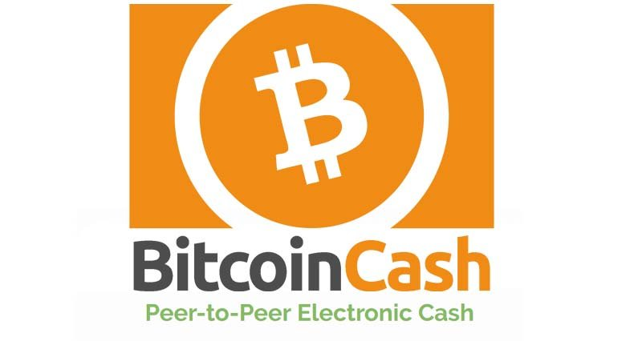
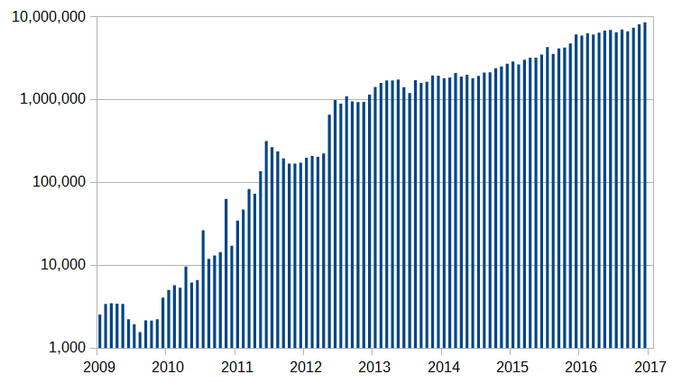
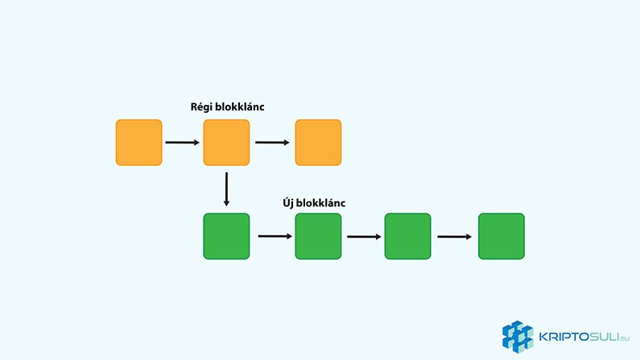

Bitcoin Cash - Avagy miért kell nekünk két Bitcoin?
Minden kétséget kizáróan Bitcoin (BTC) az egyik legnagyobb találmánya a közelmúltnak. Azonban, sok kritika éri bővíthetőségi problémái miatt amely rengeteg vitát gerjeszt a közösségben. 2017 Augusztus 1-jén Bitcoin leágazásaként(Hard Fork) megszületett a Bitcoin Cash (BCH).
Mi az a Bitcoin Cash?
Bitcoin Cash egy alternatívájaként jött létre Bitcoin-nak, és azóta szolidan beágyazta magát a Top 5 kriptopénz közé. Bitcoin Cash-t alapítói azért hozták létre, hogy felvegyék a harcot az eredeti Bitcoin egyre növekvő tranzakciós díjai és idejei ellen. Bitcoin Cash megnövelte az egy blokkban feldolgozott tranzakciók számát.
A legfőbb fejlesztés, hogy megnövelték a blokk méretét 8 MB-ra. Ezzel a bányászok a Bitcoin Cash blokkláncon több tranzakciót képesek feldolgozni másodpercenként. Ez teszi lehetővé, hogy a tranzakciók olcsóbbak, és gyorsabbak legyenek.
Miért született Bitcoin Cash?
Bitcoin bővíthetőségi problémái nem titok. Ahogy a kriptopénz egyre nő népszerűségben, úgy nő a tranzakciók mennyisége is, amely jelenleg igencsak a határokat súrolja.
A fő probléma Bitcoin blokkjának mérethatárai. Jelenleg egy blokk a Bitcoin blokkláncon 1 MB.
Forrás: commons.wikimedia.org
Miért van szükség a blokk méretének korlátozására?
Mivel Bitcoin egy megosztott főkönyvet használ, ezért minden felhasználónak le kell ezt a főkönyvet tölteni amely tartalmazza a teljes Bitcoin tranzakciós listát. Ha a tranzakciók nem lennének lekorlátozva ez a főkönyv hatalmas méretűre nőne, és hagyományos számítógépek nem lennének képesek ezt megtenni.
Ha korlátlan mennyiségű tranzakció lenne engedélyezett, Bitcoin gyorsan egy centralizált egységgé válna ahol csak néhány szervezetnek lenne elég kapacitása, hogy több tízezer tranzakciót végezzen másodpercenként.
Mivel Bitcoin alapja, hogy egy decentralizált egység legyen, ez nem igazán opció.
Az 1 MB-os limit a blokkon amely jelenleg használatban van meggátolja, hogy a főkönyv túl gyorsan túl nagyra nőjön. Új felhasználók is könnyen letölthetik a tranzakció történetet és csatlakozhatnak Bitcoin-hoz. Azonban ez a limit azt is jelenti, hogy nagyobb kereslet van tranzakciók iránt, mint hely a blokkon.
Ezért van, hogy a bányászok egyre nagyobb díjakat számolnak fel, hogy előbb elvégezzék a tranzakciókat. Ezek a tranzakciós díjak manapság nem sokban különböznek a banki vagy éppen Paypal tranzakciós díjaitól.
Bitcoin Cash alapítói is szükségesnek tartják a blokk méretének korlátozását, azonban az 1 MB limitet nevetségesnek találják. Ezért javasoltak egy rendszert, ahol megemelik a blokk méretét 8 MB-ra, amely még ésszerű új felhasználóknak is, de elég nagy ahhoz, hogy sokkal több tranzakció férjen el egy blokkban.
A blokkméret növelés elleni érvek:
A bányászok elveszthetik motivációjukat, mivel a tranzakció díjak csökkennek. Mivel a blokkméret nagyobb lesz a tranzakciókat könnyebben belerakják a blokkba, amely jelentősen csökkentik a díjakat.
Bitcoin-nak nincs helye a mindennapi használatban. A közösség néhány tagja nem akarja, hogy Bitcoin mindennapi tranzakciók része legyen. Ezek az emberek úgy érzik Bitcoin-nak magasabb hivatottsága van, mint egy hétköznapi kriptopénz.
Megnöveli a központiságot. Mivel a hálózat mérete növekszik, a feldolgozáshoz szükséges erőforrás is növekedni fog. Ezért a kisebb bányász csoportok eltűnnek, és csak a nagyobb csoportok maradnak meg. Ezáltal centralizáltabbá válik a rendszer.
Blokkméret növelés melletti érvek:
Blokkméret növelés a bányászok előnyére válik. Mivel a blokkméret nagyobb lesz több tranzakció fog elférni benne, ami több tranzakciós díjat jelent a bányászoknak.
Bitcoin-nak tovább kell nőnie, és elérhetőbbé kell válnia az emberek számára. Ha a blokkméret nem változik a tranzakciós díjak csak tovább fognak nőni. Ha ez megtörténik akkor az átlag emberek nem fogják tudni használni, csak a gazdagok és óriás vállalatok. Ez pedig teljesen ellentétes Bitcoin eredeti elképzeléseivel.
Amikor egy blokkláncon frissítésre kerül sor, két módja van. A Soft és Hard leágazás.
A Soft leágazás (Soft Fork):
Ezeket úgy kell elképzelni mint egy szoftver frissítést amely visszafelé is kompatibilis. Legjobb példa erre, ha mondjuk meg akarsz nyitni egy Word dokumentumot a Microsoft Word 2003-al amely Word 2016-al lett létrehozva. Mivel a Microsoft Word 2016 visszafelé is kompatibilis ezért a régebbi programokkal is megnyithatóak. Azonban az új verzióban lévő frissítések, plusz funkciók, nem használhatóak a régiben.
A Hard leágazás (Hard Fork):
A legfőbb különbség a Hard és Soft leágazás között, hogy a Hard leágazás nem kompatibilis visszafelé. Ha nem csatlakozol a blokklánc új verziójához, akkor nem használhatod az új frissítéseket. Gondolj a PS3 és PS4-re. Egyiket sem használhatod a másik játékaival. Tehát teljesen új blokklánc születik az új frissítésekkel, amelynek az elágazás pontjáig közös lesz a történetük a régi blokklánccal.
Bitcoin fejlődési kísérletei
Bitcoin Cash csak egy válaszlépés Bitcoin bővítési problémáira. A Bitcoin közösség más módszerek alkalmazásán dolgozott. Az első ilyen a Segregated Witness (SegWit). SegWit egy új blokk struktúra amely elválasztja az ellenőrző aláírásokat a blokkban lévő tranzakció információktól. Így csökkentve a szükséges tárhelyet tranzakciónként, ezáltal több tranzakció fér egy blokkba.
SegWit egy opcionális felhasználó által vezérelt frissítés, amely azt jelenti, hogy a bányászok választhatnak, hogy hagyományos vagy SegWit blokkot bányásszanak. Ahhoz, hogy a SegWit rendszer teljesen elfogadottá váljon a felhasználók 95%-ának kellene váltania. Jelenleg azonban ez a szám 10-15% között van.
A második lépés Bitcoin problémáinak orvoslására a SegWit2x amely megnövelte volna a blokk méretét, de nem 8 hanem 2 MB-ra. Ezen frissítés időpontja tavaly Novemberben volt azonban elég támogatás hiányában ez a kísérlet elbukott.
A bányászok
Mivel a két blokklánc a blokkméret kivételével azonos, ezért versenyezniük kell a bányászati erőforrásokért. Az első hetekben Bitcoin Cash nehézségekbe ütközött, mert a blokk bányászat nehézsége Bitcoin szintjén volt, ezt azonban felülírták és helyesbítették.
Ennek eredményeként Bitcoin Cash bányászat jövedelmezőbbé vált, és a bányászok elkezdtek átállni az eredeti Bitcoin-ról. Néhányuk azért mert hittek Bitcoin Cash jövőjében, néhányan pedig üzleti lehetőséget láttak, és azt bányásztak ami éppen jövedelmezőbb volt.
Bitcoin Cash vásárlás és tárolása
Bitcoin Cash beszerezhető olyan kezdőbarát weboldalakon mint Coinbase és BitPanda. Ezeken az oldalakon hagyományos valutánkat válthatjuk kriptopénzre. Ezenkívül ha Bitcoin-t vagy Ethereum-t szeretnénk cserélni Bitcoin Cash-re akkor ezt megtehetjük olyan kriptopénz kereskedő weboldalakon mint Binance és Bitfinex.
Vásárlás után fontos, hogy egy biztonságos helyet találj Bitcoin Cash tárolására. Ingyenesen használható szoftveres tárcák amelyek támogatják Bitcoin Cash-t többek között a Copay, Jaxx és Exodus. A két legjobb hardver tárca a piacon Ledger Nano S és Trezor szintúgy támogatja Bitcoin Cash-t.
Bitcoin Cash jövője
Nem tudni mi lesz Bitcoin Cash jövője, vagy hogy milyen hatással lesz ez a későbbiekben az eredeti Bitcoin-ra. A 8 MB-os blokkméret nagyon jól hangzik, kiderül milyen hatással lesz ez hosszútávon a bányászokra. Ez lenne a megoldás Bitcoin bővítési problémáira? Bitcoin Cash átveheti-e Bitcoin-t valaha? Meglátjuk mit hoz a jövő.


2018. Január 11.